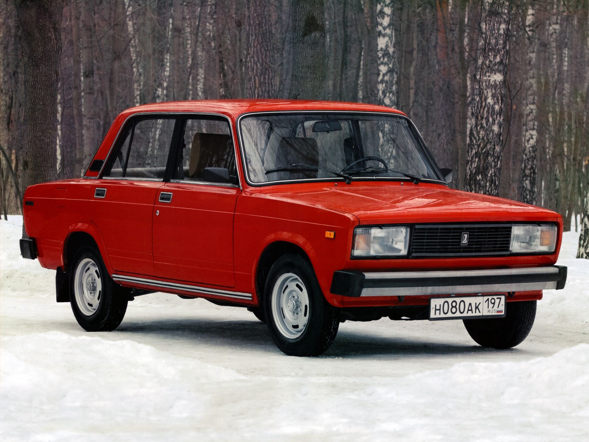
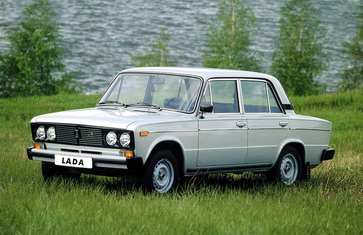
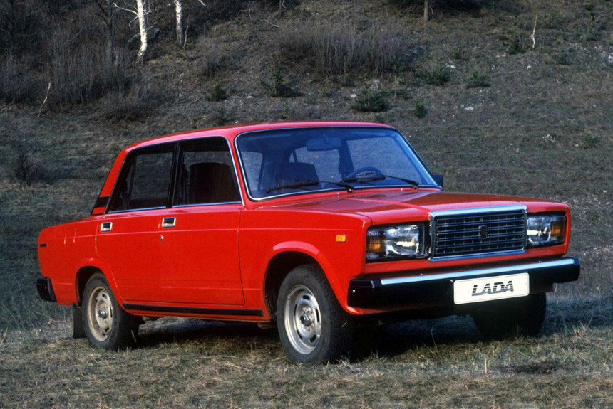

Полномасштабное производство заднеприводного седана ВАЗ-2105 началось в Тольятти в январе 1980 года. Технически автомобиль был развитием конструкции «копейки», позднее на базе «пятерки» были созданы седан 2107 и универсал 2104. На экспортных рынках эта модель была известна как Lada Riva, Lada Nova, Lada Signet.
Первые годы на машину устанавливали карбюраторные двигатели объемом 1,2, 1,3 и 1,5 литра мощностью 59, 69 и 71 л. с. соответственно. Также существовали мелкосерийные модификации с роторно-поршневым двигателем и с дизелем ВАЗ-541.
В 1983 году цены на модель ВАЗ-21051 составляли 7 500 рублей, версия ВАЗ-2105 продавалась за 8 000 рублей. Последний ВАЗ-2105 был собран в декабре 2010 года, таким образом был установлен рекорд по продолжительности конвейерной жизни среди «вазовских» моделей — 31 год. Всего было выпущено чуть более двух миллионов «пятерок».

В 1975 году на ВАЗе стартовал серийный выпуск нового седана шестой модели, который представлял собой переоформленную и модернизированную «трешку». Среди внешних изменений — бамперы, передняя облицовка, задние фары. Немного отличался и интерьер, например, у «шестерки» была иная отделка дверей, появилась кнопка включения «аварийки».
Двигатель объемом 1,6 литра и мощностью 78 л. с. был создан на базе 1,5-литрового мотора 2103. В конструкцию модели ВАЗ-2106 постоянно вносились мелкие изменения. Так, с 1987 года на «шестерку» начали устанавливать пятиступенчатою коробку передач. В конце 1980-х–начале 1990-х годов было упрощено внешнее и внутреннее оформление модели, с конца 1990-х в качестве опции на машину начали устанавливать стеклоподъемники.
В 1983 году ВАЗ-2106 продавалась за 8 400 рублей.В 1998 году сборка «шестерок» была организована на предприятии «РосЛада» в Сызрани и на Ижевском автозаводе, а в 2001 году машину прекратили выпускать на основном конвейере в Тольятти.

Первые серийные седаны ВАЗ-2107 сошли с конвейера в марте 1982 года. Заднеприводный автомобиль, являвшийся, по сути, версией модели 2105, продолжил линейку моделей, созданных на основе «копейки». Седьмая модель отличалась от «пятерки» 1,5-литровым мотором (77 л. с.), а также деталями экстерьера и интерьера — формой решетки радиатора, задними фонарями, передними сиденьями, панелью приборов с тахометром, элементами отделки салона.
В разные годы ВАЗ-2105 оснащался карбюраторными моторами объемом 1,3 и 1,5 литра, впрысковым 1,5-литровым агрегатом и даже роторно-поршневым двигателем. У экспортных версий, называвшихся Lada Riva, Lada Nova или Lada Signet, были и другие моторы. Начиная с 2008 года годы на «семерку» устанавливали двиагатель 1.6 с распределенным впрыском мощностью 73 л. с.
В 1983 году цена автомобиля составляла 9000 рублей. В 2002 году сборку модели ВАЗ-2107 начали в Украине, в 2002 году — в Египте, а в 2008 году — еще и в Аргуне, в Чеченской республике. Производство седанов в Тольятти завершилось в 2011 году, после чего машину выпускали на Ижевском автозаводе до апреля 2012 года, а в Египте сборка велась до 2013 года. Всего за эти годы было сделано 3,1 миллиона автомобилей.